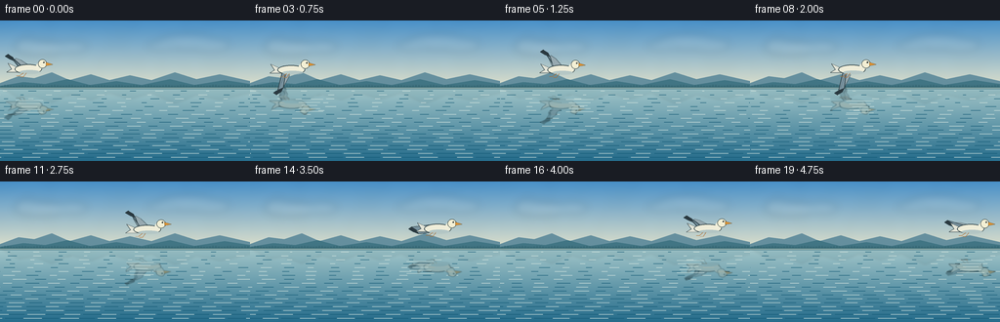
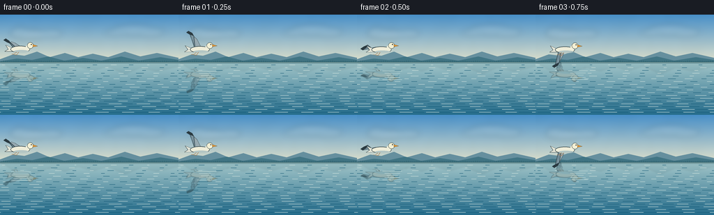
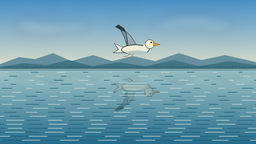

CODING AGENTS AS PIXEL WORLD MODELS
traex/GPT-5.6-Sol · phygen_056
点击播放 · 原生 RGB 像素
逐轮保存的候选
回放视频、检查图与代码变化。
每份候选均可单独播放。实际图片检查记录在下方工具轨迹中。
候选 01播放与检查图
点击播放 · 原生 RGB 像素


展开代码变化
--- 上一保存版本
+++ 本次保存版本
@@ -0,0 +1,179 @@
+from pathlib import Path
+import math
+import numpy as np
+from PIL import Image, ImageDraw, ImageFilter
+import artifact_io
+
+W,H,N = 256,144,20
+S=4
+WW,HH=W*S,H*S
+HORIZON=68
+HS=HORIZON*S
+rng=np.random.default_rng(5601)
+
+def noise_field(h,w,small=(20,36),seed=0):
+ rr=np.random.default_rng(seed)
+ a=(rr.random(small)*255).astype(np.uint8)
+ im=Image.fromarray(a,'L').resize((w,h),Image.Resampling.BICUBIC).filter(ImageFilter.GaussianBlur(5*S))
+ return np.asarray(im,dtype=np.float32)/255.0-.5
+
+def make_background(frame):
+ y=np.arange(HH)[:,None]
+ arr=np.empty((HH,WW,3),np.float32)
+ # Luminous blue morning sky, gently warmer at the horizon.
+ top=np.array([72,143,199.],np.float32); hor=np.array([222,224,203.],np.float32)
+ q=np.clip(y/HS,0,1)[...,None]
+ sky=top[None,None,:]*(1-q)+hor[None,None,:]*q
+ arr[:]=sky
+ # Clear, calm lake: reflected sky darkens and gains cyan with depth.
+ q2=np.clip((y-HS)/(HH-HS),0,1)[...,None]
+ lake0=np.array([164,199,202.]); lake1=np.array([37,108,139.])
+ lake=lake0[None,None,:]*(1-q2)+lake1[None,None,:]*q2
+ arr[HS:]=lake[HS:]
+ # Low-amplitude natural atmosphere/noise, fixed so the camera remains stable.
+ n=noise_field(HH,WW,(16,29),916)
+ arr[:HS] += n[:HS,:,None]*np.array([3.0,4.0,5.0])
+ n2=noise_field(HH,WW,(28,18),222)
+ arr[HS:] += n2[HS:,:,None]*np.array([2.0,3.0,3.5])
+ arr=np.clip(arr,0,255).astype(np.uint8)
+ im=Image.fromarray(arr,'RGB').convert('RGBA')
+ d=ImageDraw.Draw(im,'RGBA')
+ def poly(points,fill): d.polygon([(int(x*S),int(y*S)) for x,y in points],fill=fill)
+ # soft clouds, high enough not to compete with the bird
+ cloud=Image.new('RGBA',(WW,HH),(0,0,0,0)); cd=ImageDraw.Draw(cloud,'RGBA')
+ for cx,cy,rx,ry,a in [(42,28,28,7,31),(28,25,12,7,27),(74,27,15,6,23),
+ (192,22,30,8,27),(215,25,20,7,22),(167,26,16,5,19)]:
+ cd.ellipse(((cx-rx)*S,(cy-ry)*S,(cx+rx)*S,(cy+ry)*S),fill=(250,249,240,a))
+ cloud=cloud.filter(ImageFilter.GaussianBlur(4.0*S)); im=Image.alpha_composite(im,cloud)
+ d=ImageDraw.Draw(im,'RGBA')
+ # layered distant ridges establish the wide lake horizon
+ poly([(0,64),(19,57),(35,59),(53,53),(71,61),(93,55),(112,61),(133,56),(155,61),(179,53),(201,60),(225,55),(256,62),(256,69),(0,69)],(101,143,158,112))
+ poly([(0,67),(24,63),(46,65),(69,60),(92,66),(119,62),(145,66),(174,60),(199,66),(230,61),(256,65),(256,70),(0,70)],(65,117,132,130))
+ # mirrored mountains, soft and subdued under the water plane
+ refl=Image.new('RGBA',(WW,HH),(0,0,0,0)); rd=ImageDraw.Draw(refl,'RGBA')
+ def rpoly(points,fill): rd.polygon([(int(x*S),int(y*S)) for x,y in points],fill=fill)
+ rpoly([(0,68),(24,73),(46,71),(69,77),(92,70),(119,74),(145,70),(174,77),(199,70),(230,75),(256,71),(256,68)],(57,111,126,62))
+ rpoly([(0,68),(19,79),(35,77),(53,84),(71,75),(93,81),(112,74),(133,80),(155,74),(179,85),(201,76),(225,81),(256,74),(256,68)],(74,127,140,35))
+ refl=refl.filter(ImageFilter.GaussianBlur(1.3*S)); im=Image.alpha_composite(im,refl)
+ d=ImageDraw.Draw(im,'RGBA')
+ # razor-thin shore and tiny tree silhouettes
+ d.line([(0,68*S),(WW,68*S)],fill=(54,105,116,145),width=S)
+ for x in range(2,256,3):
+ ht=0.7+1.5*(0.5+0.5*math.sin(x*1.71))
+ d.line([(x*S,68*S),(x*S,(68-ht)*S)],fill=(45,96,105,130),width=max(1,S//2))
+ # Calm horizontal wavelets. They drift by fractions of their length.
+ phase=frame*0.37
+ for yy in range(72,143,4):
+ perspective=(yy-68)/76
+ alpha=int(12+22*perspective)
+ spacing=max(13,int(27-8*perspective))
+ offset=int((math.sin(yy*.73+phase)*5+phase*2)%spacing)
+ for x in range(-spacing+offset,256,spacing):
+ ln=int(5+15*perspective+3*math.sin(x*.19+yy))
+ col=(214,230,224,alpha) if ((x+yy)//spacing)%2==0 else (18,88,116,alpha//2)
+ d.line([(x*S,yy*S),((x+ln)*S,yy*S)],fill=col,width=max(1,S//2))
+ # luminous seam at the far water line
+ d.line([(0,69*S),(WW,69*S)],fill=(229,232,211,80),width=max(1,S//2))
+ return im
+
+def transform(points,cx,cy,angle=0):
+ ca,sa=math.cos(angle),math.sin(angle)
+ return [((cx+x*ca-y*sa)*S,(cy+x*sa+y*ca)*S) for x,y in points]
+
+def bird_layer(cx,cy,flap,angle=0):
+ layer=Image.new('RGBA',(WW,HH),(0,0,0,0)); d=ImageDraw.Draw(layer,'RGBA')
+ def P(points,fill,outline=None,width=1):
+ pts=transform(points,cx,cy,angle); d.polygon(pts,fill=fill)
+ if outline: d.line(pts+[pts[0]],fill=outline,width=max(1,int(width*S)),joint='curve')
+ def L(points,fill,width=1): d.line(transform(points,cx,cy,angle),fill=fill,width=max(1,int(width*S)),joint='curve')
+ def E(box,fill,outline=None,width=1):
+ x0,y0,x1,y1=box
+ pts=transform([(x0,y0),(x1,y1)],cx,cy,angle)
+ # rotation is tiny; ellipse axis-aligned gives a clean organic body
+ bb=[min(pts[0][0],pts[1][0]),min(pts[0][1],pts[1][1]),max(pts[0][0],pts[1][0]),max(pts[0][1],pts[1][1])]
+ d.ellipse(bb,fill=fill,outline=outline,width=max(1,int(width*S)))
+ af=abs(flap)
+ sgn=1 if flap>=0 else -1
+ # Far wing, seen behind the body.
+ tx=-8-10*(1-af); ty=-19*flap
+ far=[(1,0),(2,-2),(tx+5,ty*.62-2),(tx,ty),(tx-3,ty+2*sgn),(-7,2),(-1,3)]
+ P(far,(151,169,176,255),(57,77,84,220),.65)
+ # Near wing, broad, articulated, and changing shape continuously through a flap.
+ tipx=-15-12*(1-af); tipy=-27*flap
+ near=[(-4,1),(-8,-3),(-10-4*(1-af),-9*flap-2),(tipx,tipy),
+ (tipx-3,tipy+2*sgn),(tipx+2,tipy+5*sgn),
+ (tipx+7,tipy+7*sgn),(-6,5),(-1,3)]
+ P(near,(121,146,158,255),(45,65,72,255),.8)
+ # dark primary flight feathers at the wing tip
+ prim=[(tipx,tipy),(tipx-3,tipy+2*sgn),(tipx+2,tipy+5*sgn),(tipx+7,tipy+7*sgn),(tipx+5,tipy+3*sgn)]
+ P(prim,(42,57,64,255))
+ # feather ribs sell the bending wing rather than a flat triangle
+ for k in (0.28,0.48,0.68):
+ ex=tipx*k+(-5)*(1-k); ey=tipy*k+3*(1-k)
+ L([(-5,1),(ex,ey)],(72,96,106,135),.45)
+ # tail feathers behind the pearly white body
+ P([(-12,-1),(-21,-5),(-17,1),(-22,4),(-10,4)],(226,228,215,255),(52,68,72,240),.65)
+ # body and soft lower shadow
+ E((-14,-4,14,6),(239,237,217,255),(49,68,73,255),.75)
+ E((-9,2,12,6),(173,192,192,135))
+ # neck and round head
+ P([(8,-3),(11,-7),(15,-7),(17,-3),(13,1),(8,1)],(241,239,218,255))
+ E((10,-9,19,0),(243,239,212,255),(50,67,69,255),.65)
+ # orange beak, eye and eye highlight
+ P([(18,-6),(25,-3.8),(18,-2.7)],(224,147,48,255),(83,72,48,255),.45)
+ E((15.2,-6.8,16.7,-5.3),(26,34,34,255))
+ E((15.45,-6.65,15.85,-6.25),(245,245,226,255))
+ # two tucked feet, just visible under the tail
+ L([(-5,5),(-9,8),(-12,8)],(179,109,45,230),.7)
+ L([(-2,5),(-5,9),(-8,9)],(179,109,45,220),.7)
+ return layer
+
+def add_reflection(base,bird,frame):
+ src=np.asarray(bird).copy()
+ rr=np.zeros_like(src)
+ maxy=min(HH,130*S)
+ for yy in range(HS,maxy):
+ sy=2*HS-yy
+ if sy<0 or sy>=HH: continue
+ wave=(1.15*math.sin(yy/(2.7*S)+frame*.22)+0.55*math.sin(yy/(.83*S)-frame*.31))
+ shift=int(wave*S)
+ row=np.roll(src[sy],shift,axis=0)
+ rr[yy]=row
+ # reflection attenuates and breaks into tiny horizontal bands with distance
+ band=.76+.17*math.sin(yy/(1.15*S)+frame*.18)
+ rr[yy,:,3]=(rr[yy,:,3].astype(np.float32)*.63*band).astype(np.uint8)
+ rgb=rr[yy,:,:3].astype(np.float32)
+ rr[yy,:,:3]=np.clip(rgb*.66+np.array([20,66,78])*.34,0,255).astype(np.uint8)
+ rim=Image.fromarray(rr,'RGBA').filter(ImageFilter.GaussianBlur(.42*S))
+ out=Image.alpha_composite(base,rim)
+ # A few local surface glints slice through the reflection naturally.
+ d=ImageDraw.Draw(out,'RGBA')
+ refx=(30+(226-30)*frame/(N-1))*S
+ for j in range(-2,3):
+ yy=(2*HORIZON-(48+1.1*math.sin(frame*.45))+j*3.1)*S
+ half=(8+abs(j)*3)*S
+ d.line([(refx-half,yy),(refx+half,yy)],fill=(202,224,220,20),width=max(1,S//2))
+ return out
+
+def generate():
+ frames=[]
+ for i in range(N):
+ u=i/(N-1)
+ # smooth steady crossing with a subtle lift, like a gull cruising over the lake
+ x=29+(226-29)*(u*u*(3-2*u))
+ y=48.5+1.2*math.sin(2*math.pi*(u*.82)+.35)
+ phase=2*math.pi*(i/4.8)+.55
+ flap=math.sin(phase)
+ angle=.018*math.cos(phase)-.012
+ bg=make_background(i)
+ bird=bird_layer(x,y,flap,angle)
+ scene=add_reflection(bg,bird,i)
+ scene=Image.alpha_composite(scene,bird)
+ # downsample supersampled vectors for clean cinematic edges
+ scene=scene.convert('RGB').resize((W,H),Image.Resampling.LANCZOS)
+ frames.append(np.asarray(scene,dtype=np.uint8))
+ return np.stack(frames)
+
+if __name__=='__main__':
+ frames=generate()
+ artifact_io.save(frames,Path(__file__).resolve().parent)
可观测工具轨迹
实际执行的命令与返回图片。
命令 1exit 0
/bin/bash -lc "cat prompt.txt && printf '\\n---RULES---\\n' && cat GENERATION_RULES.md && printf '\\n---SPEC---\\n' && cat task_spec.json"
命令 2exit 0
/bin/bash -lc "find . -maxdepth 2 -type f -printf '%p\\n' | sort && printf '\\nTOOLS\\n' && command -v ffmpeg || true && command -v python3 || true"
命令 3exit 0
/bin/bash -lc 'cat artifact_io.py'
命令 4exit 0
/bin/bash -lc "python3 - <<'PY'
import PIL, numpy
print('PIL',PIL.__version__,'numpy',numpy.__version__)
try:
import scipy; print('scipy',scipy.__version__)
except Exception as e: print(e)
PY"命令 5exit 2
/bin/bash -lc "cat > generate.py <<'PY'
from pathlib import Path
import math
import numpy as np
from PIL import Image, ImageDraw, ImageFilter
import artifact_io
W,H,N = 256,144,20
S=4
WW,HH=W*S,H*S
HORIZON=68
HS=HORIZON*S
rng=np.random.default_rng(5601)
def noise_field(h,w,small=(20,36),seed=0):
rr=np.random.default_rng(seed)
a=(rr.random(small)*255).astype(np.uint8)
im=Image.fromarray(a,'L').resize((w,h),Image.Resampling.BICUBIC).filter(ImageFilter.GaussianBlur(5*S))
return np.asarray(im,dtype=np.float32)/255.0-.5
def make_background(frame):
y=np.arange(HH)[:,None]
arr=np.empty((HH,WW,3),np.float32)
# Luminous blue morning sky, gently warmer at the horizon.
top=np.array([72,143,199.],np.float32); hor=np.array([222,224,203.],np.float32)
q=np.clip(y/HS,0,1)[...,None]
sky=top[None,None,:]*(1-q)+hor[None,None,:]*q
arr[:]=sky
# Clear, calm lake: reflected sky darkens and gains cyan with depth.
q2=np.clip((y-HS)/(HH-HS),0,1)[...,None]
lake0=np.array([164,199,202.]); lake1=np.array([37,108,139.])
lake=lake0[None,None,:]*(1-q2)+lake1[None,None,:]*q2
arr[HS:]=lake[HS:]
# Low-amplitude natural atmosphere/noise, fixed so the camera remains stable.
n=noise_field(HH,WW,(16,29),916)
arr[:HS] += n[:HS,None]*np.array([3.0,4.0,5.0])
n2=noise_field(HH,WW,(28,18),222)
arr[HS:] += n2[HS:,None]*np.array([2.0,3.0,3.5])
arr=np.clip(arr,0,255).astype(np.uint8)
im=Image.fromarray(arr,'RGB').convert('RGBA')
d=ImageDraw.Draw(im,'RGBA')
def poly(points,fill): d.polygon([(int(x*S),int(y*S)) for x,y in points],fill=fill)
# soft clouds, high enough not to compete with the bird
cloud=Image.new('RGBA',(WW,HH),(0,0,0,0)); cd=ImageDraw.Draw(cloud,'RGBA')
for cx,cy,rx,ry,a in [(42,28,28,7,31),(28,25,12,7,27),(74,27,15,6,23),
(192,22,30,8,27),(215,25,20,7,22),(167,26,16,5,19)]:
cd.ellipse(((cx-rx)*S,(cy-ry)*S,(cx+rx)*S,(cy+ry)*S),fill=(250,249,240,a))
cloud=cloud.filter(ImageFilter.GaussianBlur(4.0*S)); im=Image.alpha_composite(im,cloud)
d=ImageDraw.Draw(im,'RGBA')
# layered distant ridges establish the wide lake horizon
poly([(0,64),(19,57),(35,59),(53,53),(71,61),(93,55),(112,61),(133,56),(155,61),(179,53),(201,60),(225,55),(256,62),(256,69),(0,69)],(101,143,158,112))
poly([(0,67),(24,63),(46,65),(69,60),(92,66),(119,62),(145,66),(174,60),(199,66),(230,61),(256,65),(256,70),(0,70)],(65,117,132,130))
# mirrored mountains, soft and subdued under the water plane
refl=Image.new('RGBA',(WW,HH),(0,0,0,0)); rd=ImageDraw.Draw(refl,'RGBA')
def rpoly(points,fill): rd.polygon([(int(x*S),int(y*S)) for x,y in points],fill=fill)
rpoly([(0,68),(24,73),(46,71),(69,77),(92,70),(119,74),(145,70),(174,77),(199,70),(230,75),(256,71),(256,68)],(57,111,126,62))
rpoly([(0,68),(19,79),(35,77),(53,84),(71,75),(93,81),(112,74),(133,80),(155,74),(179,85),(201,76),(225,81),(256,74),(256,68)],(74,127,140,35))
refl=refl.filter(ImageFilter.GaussianBlur(1.3*S)); im=Image.alpha_composite(im,refl)
d=ImageDraw.Draw(im,'RGBA')
# razor-thin shore and tiny tree silhouettes
d.line([(0,68*S),(WW,68*S)],fill=(54,105,116,145),width=S)
for x in range(2,256,3):
ht=0.7+1.5*(0.5+0.5*math.sin(x*1.71))
d.line([(x*S,68*S),(x*S,(68-ht)*S)],fill=(45,96,105,130),width=max(1,S//2))
# Calm horizontal wavelets. They drift by fractions of their length.
phase=frame*0.37
for yy in range(72,143,4):
perspective=(yy-68)/76
alpha=int(12+22*perspective)
spacing=max(13,int(27-8*perspective))
offset=int((math.sin(yy*.73+phase)*5+phase*2)%spacing)
for x in range(-spacing+offset,256,spacing):
ln=int(5+15*perspective+3*math.sin(x*.19+yy))
col=(214,230,224,alpha) if ((x+yy)//spacing)%2==0 else (18,88,116,alpha//2)
d.line([(x*S,yy*S),((x+ln)*S,yy*S)],fill=col,width=max(1,S//2))
# luminous seam at the far water line
d.line([(0,69*S),(WW,69*S)],fill=(229,232,211,80),width=max(1,S//2))
return im
def transform(points,cx,cy,angle=0):
ca,sa=math.cos(angle),math.sin(angle)
return [((cx+x*ca-y*sa)*S,(cy+x*sa+y*ca)*S) for x,y in points]
def bird_layer(cx,cy,flap,angle=0):
layer=Image.new('RGBA',(WW,HH),(0,0,0,0)); d=ImageDraw.Draw(layer,'RGBA')
def P(points,fill,outline=None,width=1):
pts=transform(points,cx,cy,angle); d.polygon(pts,fill=fill)
if outline: d.line(pts+[pts[0]],fill=outline,width=max(1,int(width*S)),joint='curve')
def L(points,fill,width=1): d.line(transform(points,cx,cy,angle),fill=fill,width=max(1,int(width*S)),joint='curve')
def E(box,fill,outline=None,width=1):
x0,y0,x1,y1=box
pts=transform([(x0,y0),(x1,y1)],cx,cy,angle)
# rotation is tiny; ellipse axis-aligned gives a clean organic body
bb=[min(pts[0][0],pts[1][0]),min(pts[0][1],pts[1][1]),max(pts[0][0],pts[1][0]),max(pts[0][1],pts[1][1])]
d.ellipse(bb,fill=fill,outline=outline,width=max(1,int(width*S)))
af=abs(flap)
sgn=1 if flap>=0 else -1
# Far wing, seen behind the body.
tx=-8-10*(1-af); ty=-19*flap
far=[(1,0),(2,-2),(tx+5,ty*.62-2),(tx,ty),(tx-3,ty+2*sgn),(-7,2),(-1,3)]
P(far,(151,169,176,255),(57,77,84,220),.65)
# Near wing, broad, articulated, and changing shape continuously through a flap.
tipx=-15-12*(1-af); tipy=-27*flap
near=[(-4,1),(-8,-3),(-10-4*(1-af),-9*flap-2),(tipx,tipy),
(tipx-3,tipy+2*sgn),(tipx+2,tipy+5*sgn),
(tipx+7,tipy+7*sgn),(-6,5),(-1,3)]
P(near,(121,146,158,255),(45,65,72,255),.8)
# dark primary flight feathers at the wing tip
prim=[(tipx,tipy),(tipx-3,tipy+2*sgn),(tipx+2,tipy+5*sgn),(tipx+7,tipy+7*sgn),(tipx+5,tipy+3*sgn)]
P(prim,(42,57,64,255))
# feather ribs sell the bending wing rather than a flat triangle
for k in (0.28,0.48,0.68):
ex=tipx*k+(-5)*(1-k); ey=tipy*k+3*(1-k)
L([(-5,1),(ex,ey)],(72,96,106,135),.45)
# tail feathers behind the pearly white body
P([(-12,-1),(-21,-5),(-17,1),(-22,4),(-10,4)],(226,228,215,255),(52,68,72,240),.65)
# body and soft lower shadow
E((-14,-4,14,6),(239,237,217,255),(49,68,73,255),.75)
E((-9,2,12,6),(173,192,192,135))
# neck and round head
P([(8,-3),(11,-7),(15,-7),(17,-3),(13,1),(8,1)],(241,239,218,255))
E((10,-9,19,0),(243,239,212,255),(50,67,69,255),.65)
# orange beak, eye and eye highlight
P([(18,-6),(25,-3.8),(18,-2.7)],(224,147,48,255),(83,72,48,255),.45)
E((15.2,-6.8,16.7,-5.3),(26,34,34,255))
E((15.45,-6.65,15.85,-6.25),(245,245,226,255))
# two tucked feet, just visible under the tail
L([(-5,5),(-9,8),(-12,8)],(179,109,45,230),.7)
L([(-2,5),(-5,9),(-8,9)],(179,109,45,220),.7)
return layer
def add_reflection(base,bird,frame):
src=np.asarray(bird).copy()
rr=np.zeros_like(src)
maxy=min(HH,130*S)
for yy in range(HS,maxy):
sy=2*HS-yy
if sy<0 or sy>=HH: continue
wave=(1.15*math.sin(yy/(2.7*S)+frame*.22)+0.55*math.sin(yy/(.83*S)-frame*.31))
shift=int(wave*S)
row=np.roll(src[sy],shift,axis=0)
rr[yy]=row
# reflection attenuates and breaks into tiny horizontal bands with distance
band=.76+.17*math.sin(yy/(1.15*S)+frame*.18)
rr[yy,:,3]=(rr[yy,:,3].astype(np.float32)*.63*band).astype(np.uint8)
rgb=rr[yy,:,:3].astype(np.float32)
rr[yy,:,:3]=np.clip(rgb*.66+np.array([20,66,78])*.34,0,255).astype(np.uint8)
rim=Image.fromarray(rr,'RGBA').filter(ImageFilter.GaussianBlur(.42*S))
out=Image.alpha_composite(base,rim)
# A few local surface glints slice through the reflection naturally.
d=ImageDraw.Draw(out,'RGBA')
refx=(30+(226-30)*frame/(N-1))*S
for j in range(-2,3):
yy=(2*HORIZON-(48+1.1*math.sin(frame*.45))+j*3.1)*S
half=(8+abs(j)*3)*S
d.line([(refx-half,yy),(refx+half,yy)],fill=(202,224,220,20),width=max(1,S//2))
return out
def generate():
frames=[]
for i in range(N):
u=i/(N-1)
# smooth steady crossing with a subtle lift, like a gull cruising over the lake
x=29+(226-29)*(u*u*(3-2*u))
y=48.5+1.2*math.sin(2*math.pi*(u*.82)+.35)
phase=2*math.pi*(i/4.8)+.55
flap=math.sin(phase)
angle=.018*math.cos(phase)-.012
bg=make_background(i)
bird=bird_layer(x,y,flap,angle)
scene=add_reflection(bg,bird,i)
scene=Image.alpha_composite(scene,bird)
# downsample supersampled vectors for clean cinematic edges
scene=scene.convert('RGB').resize((W,H),Image.Resampling.LANCZOS)
frames.append(np.asarray(scene,dtype=np.uint8))
return np.stack(frames)
if __name__=='__main__':
frames=generate()
artifact_io.save(frames,Path(__file__).resolve().parent)
PY
python3 generate.py
ls -lh pixels.npz inspection.png frames/00.png frames/10.png frames/19.png"命令 6exit 0
/bin/bash -lc "python3 - <<'PY' p='generate.py' s=open(p).read().replace(\"n[:HS,None]*np.array\", \"n[:HS,:,None]*np.array\").replace(\"n2[HS:,None]*np.array\", \"n2[HS:,:,None]*np.array\") open(p,'w').write(s) PY python3 generate.py ls -lh pixels.npz inspection.png frames/00.png frames/10.png frames/19.png"
命令 7exit 0
/bin/bash -lc "python3 - <<'PY'
import numpy as np, json
from PIL import Image
z=np.load('pixels.npz')['pixels']
assert z.shape==(144,256,20) and z.dtype==np.uint32
ims=np.stack([np.asarray(Image.open(f'frames/{i:02d}.png').convert('RGB')) for i in range(20)])
assert ims.shape==(20,144,256,3) and ims.dtype==np.uint8
print('validated',ims.shape,ims.dtype)
print('adjacent MAE',np.abs(np.diff(ims.astype(np.int16),axis=0)).mean(axis=(1,2,3)).round(3).tolist())
print('RGB range',int(ims.min()),int(ims.max()),'unique first',len(np.unique(ims[0].reshape(-1,3),axis=0)))
PY"视觉工具实际返回图片 1

视觉工具实际返回图片 2

保存候选 1 份；完成命令 7 次；可验证图片返回 2 张。原始 API 响应与完整日志保留在本地。